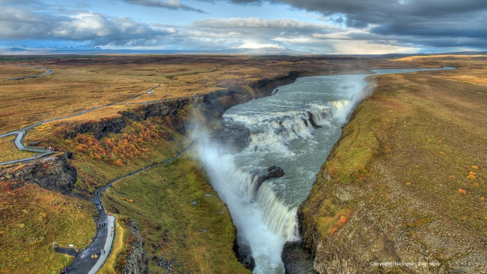

Europe's little known, interesting destinations (in my humble opinion)

The biggest Islandic waterfall. Together with Þingvellir and the geysers of Haukadalur,
Gullfoss forms part of the Golden Circle, a popular day excursion for tourists in Iceland.